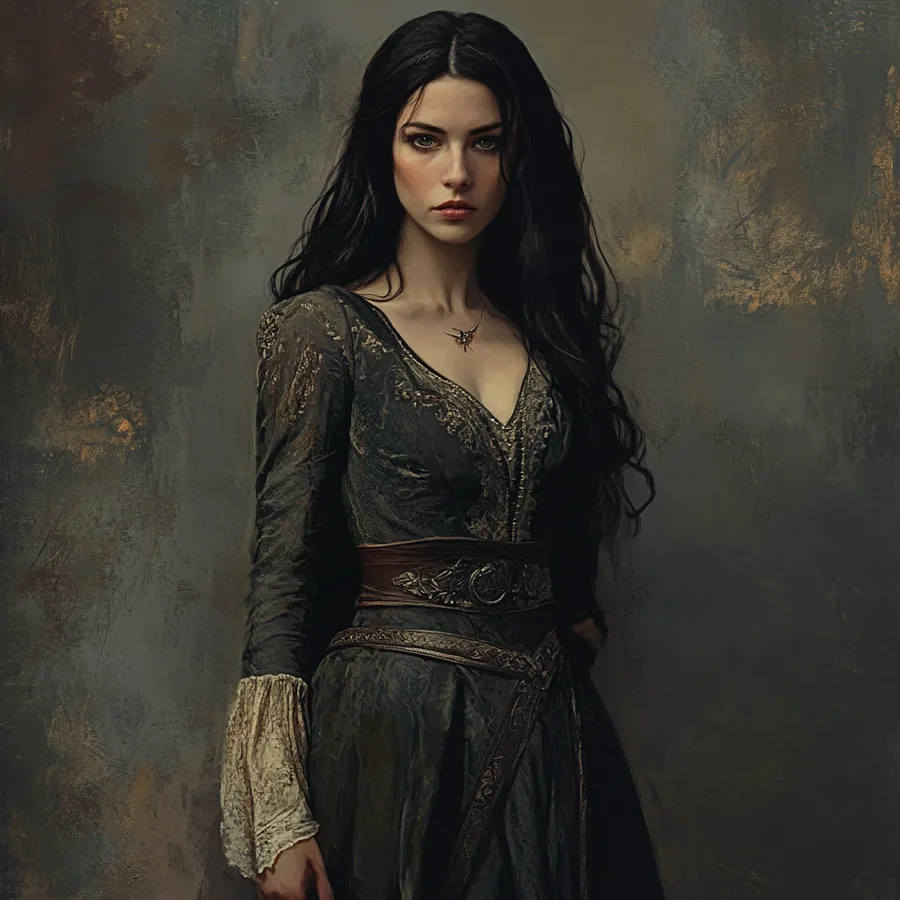

The Company
Those who make the fire — Celenneth and the family she gathered against the dark.



The Crew of the Eärlindë
Círdan's Elven crew of the voyage west, run as a Band after the Moria solo-play rules — a shared pool of Allies with a Readiness rating and five Dispositions.